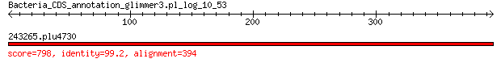

bitscore colors: <40, 40-50 , 50-80, 80-200, >200
 BLASTP 2.2.31+
Reference: Stephen F. Altschul, Thomas L. Madden, Alejandro A.
Schaffer, Jinghui Zhang, Zheng Zhang, Webb Miller, and David J.
Lipman (1997), "Gapped BLAST and PSI-BLAST: a new generation of
protein database search programs", Nucleic Acids Res. 25:3389-3402.
Reference for composition-based statistics: Alejandro A. Schaffer,
L. Aravind, Thomas L. Madden, Sergei Shavirin, John L. Spouge, Yuri
I. Wolf, Eugene V. Koonin, and Stephen F. Altschul (2001),
"Improving the accuracy of PSI-BLAST protein database searches with
composition-based statistics and other refinements", Nucleic Acids
Res. 29:2994-3005.
Database: eggnogv4.proteins.all.fa
14,875,530 sequences; 5,112,597,290 total letters
Query= Bacteria_CDS_annotation_glimmer3.pl_log_10_53
Length=394
Score E
Sequences producing significant alignments: (Bits) Value
243265.plu4730 798 0.0
> 243265.plu4730
Length=394
Score = 798 bits (2061), Expect = 0.0, Method: Compositional matrix adjust.
Identities = 391/394 (99%), Positives = 394/394 (100%), Gaps = 0/394 (0%)
Query 1 MSKEKFERTKPHVNVGTIGHVDHGKTTLTAAITTVLAKTYGGNARAFDQIDNAPEEKARG 60
MSKEKFERTKPHVNVGTIGHVDHGKTTLTAAITTVLAKTYGGNARAFDQIDNAPEEKARG
Sbjct 1 MSKEKFERTKPHVNVGTIGHVDHGKTTLTAAITTVLAKTYGGNARAFDQIDNAPEEKARG 60
Query 61 ITISTSHVEYDTPSRHYAHVDCPGHADYVKNMITGAAQMDGAILVVAATDGPMPQTREHI 120
ITISTSHVEYDTPSRHYAHVDCPGHADYVKNMITGAAQMDGAILVVAATDGPMPQTREHI
Sbjct 61 ITISTSHVEYDTPSRHYAHVDCPGHADYVKNMITGAAQMDGAILVVAATDGPMPQTREHI 120
Query 121 LLGRQVGVPYIIVFLNKCDMVDDEELLELVEMEVRELLSQYDFPGDDTPVIRGSALKALE 180
LLGRQVGVPYIIVFLNKCDMVDDEELLELVEMEVRELLSQYDFPGDDTPVIRGSALKALE
Sbjct 121 LLGRQVGVPYIIVFLNKCDMVDDEELLELVEMEVRELLSQYDFPGDDTPVIRGSALKALE 180
Query 181 GDAEWESKILELAEALDSYIPEPERAIDQPFLLPIEDVFSISGRGTVVTGRVERGIVKVG 240
GDAEWE+KI+ELAEALDSYIPEPERAIDQPFLLPIEDVFSISGRGTVVTGRVERGIVKVG
Sbjct 181 GDAEWEAKIIELAEALDSYIPEPERAIDQPFLLPIEDVFSISGRGTVVTGRVERGIVKVG 240
Query 241 EEVEIVGIKDTTKTTCTGVEMFRKLLDEGRAGENVGVLLRGTKRDEIERGQVLAKPGSIK 300
EEVEIVGIKDTTKTTCTGVEMFRKLLDEGRAGENVGVLLRGTKRDEIERGQVLAKPGSIK
Sbjct 241 EEVEIVGIKDTTKTTCTGVEMFRKLLDEGRAGENVGVLLRGTKRDEIERGQVLAKPGSIK 300
Query 301 PHTTFESEVYILSKDEGGRHTPFFKGYRPQFYFRTTDVTGTIELPEGVEMVMPGDNIQMK 360
PHTTFESEVYILSKDEGGRHTPFFKGYRPQFYFRTTDVTGTIELPEGVEMVMPGDNIQMK
Sbjct 301 PHTTFESEVYILSKDEGGRHTPFFKGYRPQFYFRTTDVTGTIELPEGVEMVMPGDNIQMK 360
Query 361 VTLIAPIAMDQGLRFAIREGGRTVGAGVVAKIIA 394
VTLIAPIAMDQGLRFAIREGGRTVGAGVVAK+IA
Sbjct 361 VTLIAPIAMDQGLRFAIREGGRTVGAGVVAKVIA 394
Lambda K H a alpha
0.317 0.137 0.395 0.792 4.96
Gapped
Lambda K H a alpha sigma
0.267 0.0410 0.140 1.90 42.6 43.6
Effective search space used: 762832332680